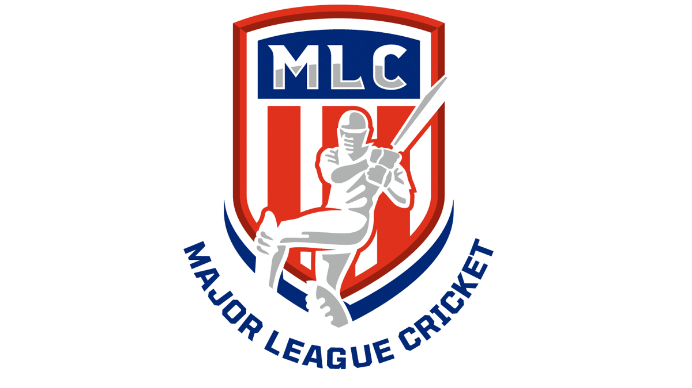

Cricket: The most storied sport and historic sport ever
Basic Overview
- Cricket, One of the most historic and storied sports of all time. Cricket was created in the
1700's by Britishers.
It soon became the most popular game in all of the United Kingdom with everyone playing, from
village cricket to the
highest level at the time: English County Cricket. The game made its way to Asia during the
British Raj in India and neighboring areas.
Similarly, the game expanded to Australia NZ and many other countries as well. The craze for
this beloved sport has not gone down as
cricket is now the second most popular sport in the world only behind America.
-
Cricket is now growing very fast as well, with the expansion of Major League Cricket. Based in
Texas this franchise cricket competition
has taken the US by storm and was extremely successfull in its inaugural season this summer.
